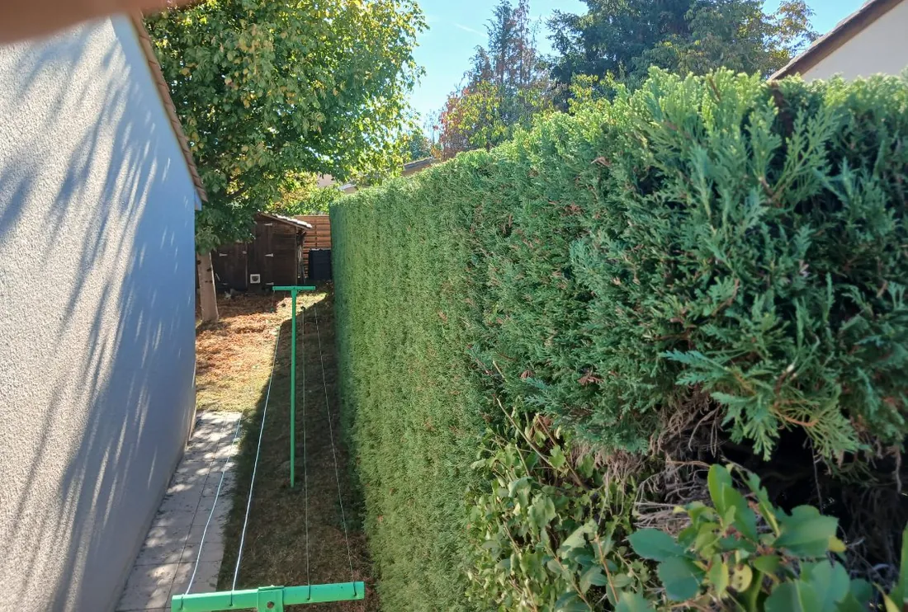
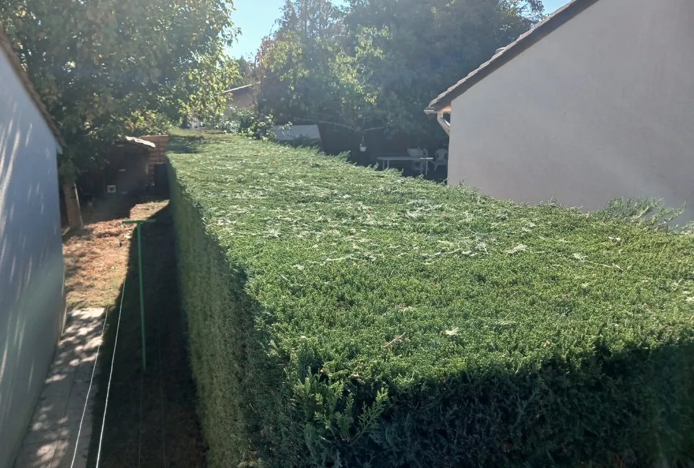

Une haie reprise au cordeau, dans un passage étroit
La haie s'était épaissie et débordait sur l'allée qui longe la maison. Le sommet a été repris sur une ligne tendue, puis les faces, en une demi-journée.
Le même point de vue, avant et après
Les deux vues sont prises depuis l'entrée du passage. Le cordeau tendu sur piquets verts est visible sur les deux.

Avant
AprèsCe qui a été fait
- Commune, Carignan-de-Bordeaux, en périphérie immédiate de la métropole
- Haie de séparation longeant une allée, contre le mur de la maison
- Motif, une haie épaissie qui réduisait le passage
- Sommet repris au cordeau, puis les faces accessibles
- Durée du chantier, une demi-journée
- Période, septembre 2026
- Essence [[À CONFIRMER : essence de la haie, à ne pas deviner d'après la photo]]
- Longueur de haie [[À CONFIRMER : linéaire de haie taillé]]
Le cordeau fait la moitié du travail
Sur la photo, la ligne blanche tendue entre deux piquets verts n'est pas un détail. C'est elle qui fixe la hauteur sur toute la longueur, et c'est sur elle que le sommet se coupe.
À l'œil, sur une haie longue, la ligne fuit toujours. On suit sans s'en rendre compte le relief du sol ou la forme d'avant, et le résultat ondule. Le défaut ne se voit pas pendant la taille, il saute aux yeux une fois l'outil rangé.
Le passage ajoutait sa contrainte. Réduit à la largeur d'une personne entre le mur et la haie, il interdit de reculer pour juger la ligne, et il limite la place pour manœuvrer l'outil comme pour évacuer les coupes.
La face côté mur, elle, reste inaccessible. C'est la limite de toute haie plantée trop près d'une construction. Elle ne se taille pas, elle pousse contre l'enduit, et seul un recul de la plantation règle vraiment le problème.
Ce que l'on nous demande sur les haies
Au cordeau. Une ligne est tendue entre deux piquets sur toute la longueur, à la hauteur voulue, et le sommet se coupe dessus. C'est ce trait qui donne l'impression de propreté, bien plus que le soin apporté aux faces. À l'œil, sur une longue haie, la ligne fuit toujours.
Cela complique surtout l'entretien. La face côté mur reste inaccessible, elle ne se taille pas et finit par pousser contre l'enduit. Le passage doit rester assez large pour travailler et pour évacuer les coupes. Sur ce chantier, il était réduit à la largeur d'une personne.
Cela dépend de quatre choses. La longueur, la hauteur, l'épaisseur à reprendre selon le retard d'entretien, et le sort des coupes, laissées sur place ou emportées. Une haie entretenue chaque année se taille bien plus vite qu'une haie reprise après trois saisons.